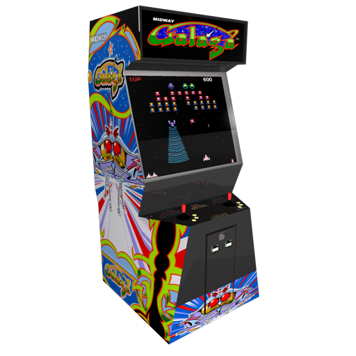
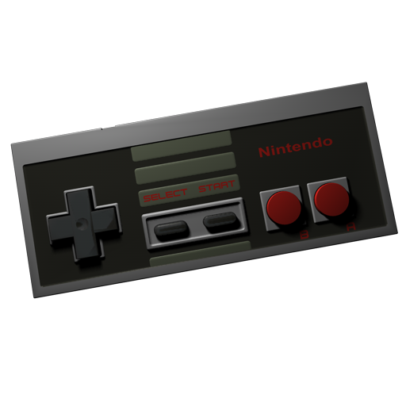

O Video Game é um jogo no qual o jogador interage com imagens enviadas a um dispositivo que as exibe, geralmente uma televisão ou um monitor. O termo videogame, também, é amplamente utilizado, no Brasil, para se referir ao console onde os jogos são processados.
Os sistemas eletrônicos usados para jogar videogames são conhecidos como plataformas - como por exemplo computadores e consoles. Os arcades e celulares são também bons exemplos de plataformas.
O dispositivo de entrada usado para manipular videogames é chamado controle e varia de acordo com a plataforma. Por exemplo, um controle pode ser constituído por um direcional e um único botão. Outros podem ter dezenas de botões e mais de um direcional. Muitos jogos de computador podem também ser jogados com teclado ou uma combinação do teclado com o mouse simultaneamente ou até mesmo controles específicos.
 Os video games também podem usar outras maneiras de interagir e prover informação ao jogador. O uso de sons é usado em larga escala desde os primórdios. Outros tipos de resposta, como dispositivos de vibração e sensores de movimento também são bastante utilizados nos video games. O avanço tecnológico tem trazido formas cada vez mais intensas de imersão nos jogos através destes periféricos, como o reconhecimento de movimentos e de voz.